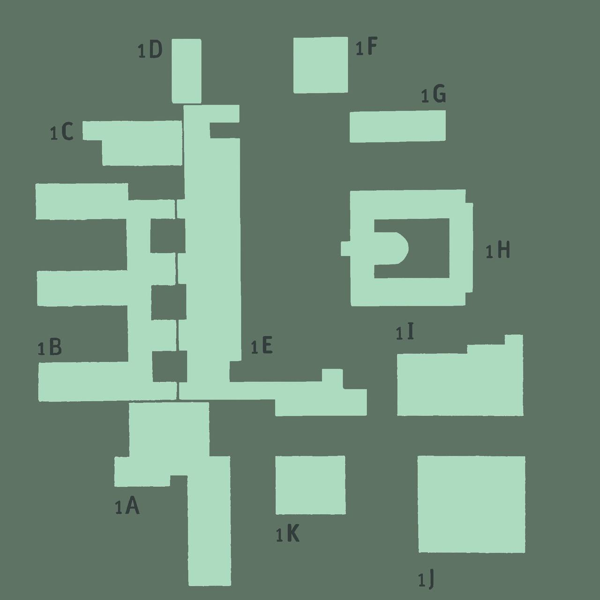

Entdecke den Campus Linden
mit einem interaktiven Benutzererlebnis
Mit dieser interaktiven Karte lässt sich der Campus "Linden", Heimat der Fakultäten I, II und IV, erkunden. Entdecke die verschiedenen Gebäude, was sich darin verbirgt und lerne den Campus allgemein besser kennen und finde dich auf dem Campus zurecht.

Legende:
1A: Fakultät I und II
1B: Fakultät I und II
1C: Fakultät I und II
1D: Fakultät I und II
1E: Fakultät I und II
1F: keine Ahnung bruder
1G: keine Ahnung bruder 2.0
1H: Fakultät IV
1I: Mensa
1J: Studierendenzentrum
1K: Bibliothek